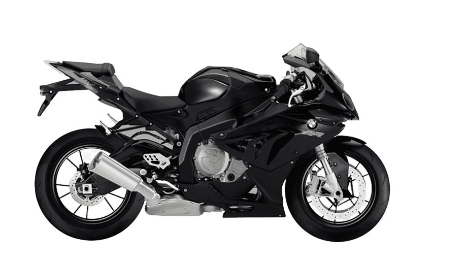

1:11
numerología del amorVer 1:11 es considerado una señal de sincronía: el universo abriendo una puerta hacia nuevos comienzos. En el amor, esta hora habla de almas que vibran en la misma frecuencia, de pensamientos que se cruzan al mismo tiempo sin planearlo, y de una invitación a manifestar, con el corazón abierto, todo lo que se desea construir junto a esa persona.
desliza para leer cada carta
Nuestro camino
19 de marzo de 2026 — hoy

Contando cada segundo
desde los momentos que marcaron nuestra historia
Hablando desde
Desde que nos vimos en persona
Desde el jam de Spotify
Desde nuestra primera llamada
¿Qué viene después?
fecha por escribir…